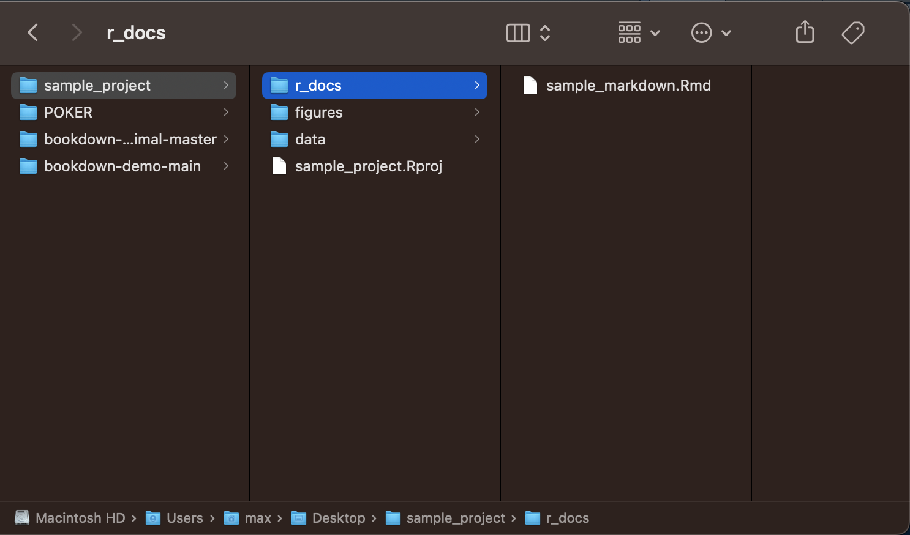
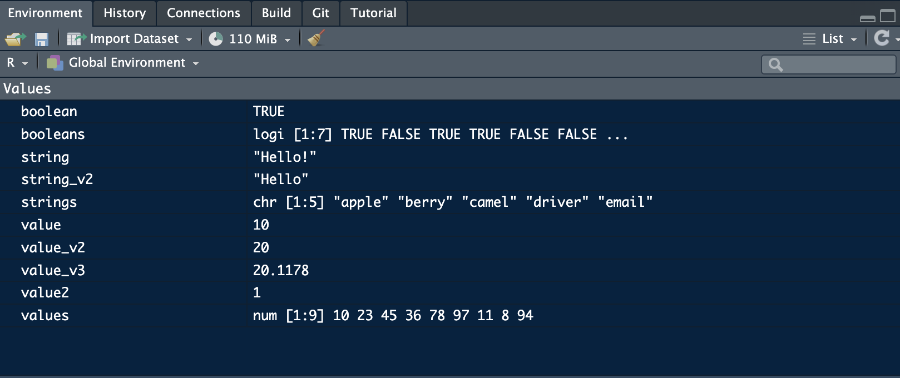

1 R and Programming Basics
In this chapter I will cover the basics of programming. Each programming language has its own intricacies, but the underlying concepts are often the same. I will explain how the basic concepts of programming are present in the syntax of R, offer tips on how to resolve stubborn issues, and suggest additional resources for exploring R and RStudio.
1.1 Projects
R uses project files to save the state of your work space. When you make a new project it creates a folder that holds all of the relevant files for that project. You can hold all files of a type (e.g. figures or data) in a folder and then reference that folder, allowing for easy access and clear organization. RStudio saves the work space state into the project file (.Rproj). When you reopen that file, all the windows you had open will reappear exactly as they were. This is very useful for preserving your workflow.
Projects are able to link multiple R markdown documents and other files around the same final project in a coherent way. This can be a wonderful way to take notes in class around examples of code. It is also very useful when working on an assignment with different sections. For example, in my work I often use separate R markdown documents for the data cleaning process and the data analysis and visualization process. By creating separate documents, I am able to run each section independently and then create a final document in another R markdown file that contains intentional elements from each stage.
This is an example of a sample project I made to illustrate how to organize files, using the tips Andy Field recommends in his tutorial:20 
The names of each folder or file must be easy to reference. To make sure that they are able to be referenced in your code, do not use capital letters or spaces, only lowercase letter and underscores. In computer science, this convention is called camel case. File names should be consistent and clear to anyone who looks at your project.
1.2 Code Chunks
A code chunk is a section of code within a R markdown document. Each code chunk has settings to change how it interacts with the final document. By default, the code chunk will run the code and display both the code and output in the final document. When creating final products that generate professional output, often it will be best to change those settings by clicking the gear in the top left of the chunk. For visualizations, where the output is the only part you want in your final product, it is best to set the chunk to show output only. Otherwise, it is best in your final document to set the code to show nothing (run code), unless you are specifically talking about the code and need to reference it.
To avoid having to set each code chunk individually, you can do your coding and preliminary drafting in a rough document and then create a clean final document that references files created and saved from the messy document. This allows you to have a more robust record of your process and create a more refined final submission.
1.3 Packages, Functions, File Structure, and File Paths
Andy Field does a good job covering the basics of calling files and the value of the here()function in his tutorial.21 here() is a very useful tool in quickly referencing file names and folders without having to type out or copy and paste the name each time.
1.3.1 Packages and Functions
Packages are collections of code snippets called functions, usually focused around a central idea or task. For example, the dplyr package is focused around data manipulation. A function can have parameters that are inputs required for functions to run. Parameters can be all sorts of objects or data types. They can be required or optional. Everything you need to know about a function is contained in its documentation, which can be found on the internet on the r documentation website or be accessed directly in RStudio by typing ?function() into the console as shown in the screenshot below.
1.3.2 Installing and Referencing Packages
The code snippets below shows how to install a package, call it using the library() function, and then use a function within a package. I have the installation code commented out as I already have the package installed. To denote a comment within code you put # before the comment, telling R not to run anything after the #. Comments are very important for labeling what you are doing in your code so others can understand what you are trying to do.
You only need to install a package once and it should be done in the console section instead of in a R markdown file or code chunk. Its important to use the exact syntax shown below. If you do not surround the name of the packages with quotation marks within the parentheses (either " ", or ' ') it will not run. The double or single quotes indicates to R that the text inside is to be read as a string, not as code. The packages used in this book are outlined the end of the preface.
## here() starts at /Users/max/Desktop/wrangling_modules1.3.3 Calling Functions
The code chunk below demonstrates how to use the here() function to generate a file pathway to a file in your working directory. The working directory refers to the folder R pulls files from. The default setting for the working directory is your project folder. here() adds the text contained within the here function to the end of the working directory file path. If you do not want to load the package, as you only need to use it once when importing data, it can be written like this: here::here(). package::function() allows you to reference a function from a package without having to use library(package) to load in the package. Andy Field does a good job explaining the structure of file paths in the recommended sections from his tutorial.22
## [1] "/Users/max/Desktop/wrangling_modules/folder/file.ext"1.3.4 Changing the Working Directory
The working directory can be changed by through setwd(file_path). This is useful when trying to access files that are not saved within the R project you are working on. The working directory is only changed for the code chunk it is used in and does not affect the suggested file path from here(). In the code chunk below I use setwd() to reference my desktop.
1.4 Objects, data, and types
As you are coding in R, you need to save things. To save something, use the assignment operator <-. Saving something allows you to refer to it later.
There are a few basic categories of individual data types:
- boolean
- booleans are either
TRUEorFALSE
- booleans are either
- numeric
- numeric values represent some sort of number
- e.g.
num <- 50
- string
- a string of characters
- e.g.
"Hello!"or'Hello!'
- missing value
- designated as
NA - can be used in conjuntion with any of the above types, as it does not have an inherent type
- designated as
Any of these data types can be saved in a vector. A vector is a list of ordered individual elements. All the elements within a vector must be the same individual data type.
1.4.1 Mathematical Operators
R has all the features of a calculator and can perform advanced mathematical operations through functions. Here is a list of all the mathematical operators and their symbols:
+- addition-- subtraction*- multiplication/- division^- exponent
These are some relevant mathematical functions in base R:
log()- natural logcos()- cosinesin()- sine
The round() function is useful for rounding numbers to integers. If you specify the number of digits with the digits = parameters you can limit number of digits saved. If you are trying to do something mathematical there is almost certainly already a function for it. Don’t be afraid to look it up.
This code chunk is an example of how to save each data type and demonstrates the syntax for basic mathematical operations:
boolean <- TRUE # boolean data type
string <- "Hello!"
string_2 <- 'Hello'
value <- 10 # numeric data type
# spaces aren't necessary but allow for easier reading
value_2 <- value * 2 # multiplication operator
value_2 # by printing a variable name on a line of code, R will display it## [1] 20## [1] 1# if you put parentheses around something when you do it, it prints it as well
value_4 <- value + (20.5678 - 10.45)
# addition and subtraction operators as well as the order of operations
value_5 <- cos(value_3) # example of using a function
# this is an example of a function included in "Base R",
# meaning you do not have to reference a package using library() to use it
value_4## [1] 20.1178## [1] 20## [1] 20.121.4.2 Objects
Elements can be combined using the c()function to create vectors:
values <- c(10, 23, 45, 36, 78, 97, 11, 8, 94)
strings <- c('apple', 'berry', 'camel', "driver", "email")
booleans <- c(TRUE, FALSE, TRUE, TRUE, FALSE, FALSE, FALSE)
(mean <- mean(values)) # this shows the use of a function on a set of numeric variables## [1] 44.66667Everything you save will be stored in the environment window of RStudio and can be viewed by clicking on it: 
Objects are a collection of any of these value types or another data structure. They usually have a specified organization and can be integrated with different packages. Different data types will be discussed further in Chapter 2.
1.5 Logical Operators
The logical operators are useful for comparing boolean and numeric variables. These operators can be used in conjunction with loops and if/else statements.
1.5.1 Boolean Operators
Boolean operators can be used to compare boolean values (TRUE or FALSE) and sometimes numeric values. These operators always return a boolean result.
&- and- both sides of
&must evaluate asTRUEto return true, otherwise the statement returnsFALSE - only evaluates booleans
- both sides of
## [1] FALSE## [1] TRUE## [1] FALSE|- or- if either side of
|isTRUE, this statement returnsTRUE - only evaluates booleans
- if either side of
## [1] TRUE## [1] TRUE## [1] FALSE==- equal- returns
TRUEif both side of the statement are equivalent, returnsFALSEif they are not - can also be used with numeric variables as well as boolean
- note: in a logical expression syntax requires two equal signs
- returns
## [1] TRUE## [1] FALSE## [1] TRUE## [1] FALSE!=- not equal- can also be used with numeric variables as well as boolean
- if the variables are not equal, this statement returns
TRUE; if they are equal, it returnsFALSE
## [1] FALSE## [1] TRUE## [1] FALSE## [1] TRUE1.5.2 Numeric Operators
These numeric logical operators return (output) a boolean result:
>- greater than
## [1] FALSE## [1] TRUE## [1] FALSE>=- greater than or equal to
## [1] FALSE## [1] TRUE## [1] TRUE<- less than
## [1] TRUE## [1] FALSE## [1] FALSE<=- less than or equal to
## [1] TRUE## [1] FALSE## [1] TRUENA represents a missing value and does not have a type like the examples above. This is very useful for representing missing values in a way that R recognizes, but can lead to errors if used with certain functions.
1.6 If Else Statements
If else statements make the execution of code conditional on a boolean statement. An if statement only executes the code inside the curly brackets ({) if the conditional statement evaluates to TRUE. If the conditional statement evaluates to FALSE, it executes the code in the else statement. An else statement is not required.
When using the if statement the basic structure is as follows:
if(boolean statement){code to execute}.
It is best to space out the bracket and parentheses syntax over multiple lines as demonstrated in the example below. The syntax must precisely be followed otherwise the code will break or run in an unintentional way.
# Lets use the same variables as above
a <- 50
b <- 51
# a <= b evaluates to TRUE
if (a <= b){
print("TRUE")
}## [1] "TRUE"# a >= b evaluates to FALSE
if (a >= b){
print("TRUE")
} #when there is no else statement and the if statement evaluates to FALSE, nothing happens
# if / else statement example
if (b <= a){
print("TRUE")
} else{
print("FALSE")
}## [1] "FALSE"You can add an else statement after the second curly bracket of the if statement in the same line with its own set of curly brackets. The code within the brackets of the else statement only runs if the above if statement evaluates to false. An example of this is shown in the chunk above and the general form is shown here: if(boolean){code} else{other code}
1.7 For and While loops
For and while loops are useful code structures that allow you to repeat sections of code either a set number of times or until the desired result is achieved. Before getting into the specifics of loops, we must discuss indexing in R. Indexing is how a programming language counts. Programming languages either start indexing (counting) at 0 or 1. R indexes starting at 1 and going to the final number of the count. This is demonstrated in the for loops section below.
1.7.1 For Loops
For loops run the code within the loop a set number of times
for (x in 1:5){ # this loop increases by one each time it runs until x = 5
print(x) # what you want the loop to do
} # this loop prints the current value of x## [1] 1
## [1] 2
## [1] 3
## [1] 4
## [1] 5You can also use for loops to iterate over the items within an object. The code chunk below demonstrates this using a vector of integers.
obj <- c(1,2,3,4,5,6,7,8,9,10)
for (y in obj){ # each time this loop runs y represents the next item in the vector
# this loop runs the number of items in the vector (often denoted n)
y <- y + 10 # this statement adds 10 the current value of y
print(y) # this statement prints y
}## [1] 11
## [1] 12
## [1] 13
## [1] 14
## [1] 15
## [1] 16
## [1] 17
## [1] 18
## [1] 19
## [1] 201.7.2 While Loops
While loops run until the specified parameter is satisfied. You must be careful with while loops, because if the loop parameter is never satisfied in your code the computer will run the loop forever and your program will break. The code chunk below illustrates how to use while loops.
num <- 0
while(num <= 10){ # why does this loop print from 1 to 11 instead of 0 to 10?
num <- num + 1 # examine the code of the loop line by line as the computer looks at it for debuging
print(num) # print statements are a useful tool in debuging
# they help determine where your code breaks
}## [1] 1
## [1] 2
## [1] 3
## [1] 4
## [1] 5
## [1] 6
## [1] 7
## [1] 8
## [1] 9
## [1] 10
## [1] 111.8 Writing your own functions
Writing your own functions is valuable when you are writing code to do the same thing multiple times. By generalizing the variables of what you are trying to do as parameters in a function, the entire task becomes very easy to replicate. Writing functions also increases your understanding of the processes you are trying to code. The add_ten function, shown below, demonstrates how to use a parameter and optional parameter to add ten to a numeric variable and then raise it to the power of the optional variable if the optional parameter is specified.
# write our own function
add_ten <- function(parameter, optional = 0){ # the optional parameter is zero if not specified
new <- as.numeric(parameter) + 10 # add ten to the numeric parameter
# the as.numeric function here solves a type error when knitting
if (optional != 0){ # if the optional parameter does not equal 0
new <- new^optional # raise new to the power of the option parameter if included
}
return(new) # the return statement ends the function and whats inside the parentheses is the result of the function
}
# if you save a function, it saves what the function returns
(result <- add_ten(10)) # call and run the written function above## [1] 20# this works without the optional parameter
add_ten(20, optional = 2) # if you use an optional parameter you must set it equal to the name of the parameter## [1] 900## Warning in add_ten("abc"): NAs introduced by coercion## [1] NA1.9 Tutorials
Installing the learnr package will enable tutorials within R studio for a variety of useful things.23 You can access this in the environment window in RStudio. If you run into any problems using a function, the first step is to search for the documentation for that function. The documentation will outline all of the required parameters, optional parameters, and examples for how to use the function.